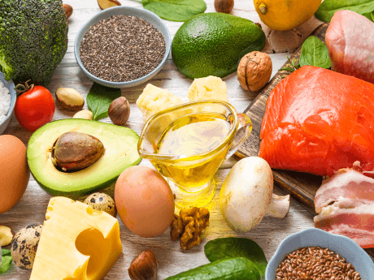

Правильное питание для красивой и здоровой кожи
02.03.2023

1 002

6 мин
Содержание
Изменения во внешнем виде кожи связывали с плохим питанием задолго до того, как были обнаружены вообще какие-либо биохимические взаимосвязи. Одним из первых, кто установил эти ассоциации, был шотландский врач Джеймс Линд, который описал кровоточивость десен, изменение цвета кожи, аномальный рост волос и плохое заживление ран, связанные с заболеванием, известным как цинга (дефицит витамина С).
Кожа, как и кишечник, взаимодействует с микроорганизмами, которые попадают извне. Оба органа чрезвычайно насыщены микрофлорой: в коже содержится около 1012 элементарных частиц, а в кишечнике – 1014 разных микробных клеток1 .
Факторы образа жизни, такие как диета и гигиена, оказывают определяющее влияние на толерантность иммунной системы к постоянным воспалительным стимулам, что в сочетании с генетической предрасположенностью приводит к болезням и высыпаниям на лице.
Какие продукты полезны для кожи лица

Еда должна быть разнообразной и сбалансированной. Вот полезные для кожи продукты, потребление которых положительно сказывается на здоровье:
● Нежирное мясо: курица, говядина, индейка. Отличный вариант для тех, кто не может без мяса.
● Рыба и морепродукты. Источник незаменимых жирных кислот омега-3, которые укрепляют кожу и улучшают ее эластичность. Морепродукты являются отличным источником белка и не влияют на работу сальных желез.
● Овощи. В них содержится клетчатка, которая прекрасно влияет на работу желудочно-кишечного тракта. Если в дневном рационе будет содержаться не менее 70% суточной нормы клетчатки, то, помимо очищения организма от токсинов, быстро уйдет лишний вес.
● Бобовые. Они подходят в качестве гарнира к мясу или в составе зеленого салата.
● Ферментированные продукты — кефир, йогурт, кимчи. Они содержат микроорганизмы, которые улучшают микрофлору кишечника и делают кожу менее склонной к воспалению. Однако их следует употреблять с осторожностью и отслеживать реакции.
Питьевой режим
Питьевой режим — это минимальное потребление воды, которое нужно человеку для поддержания его нормальной жизнедеятельности. Питьевой режим логично сочетать с правильным питанием, тогда можно достичь максимального эффекта в борьбе за здоровую кожу лица и тела.
Норма потребления воды зависит от возраста и веса. Ориентироваться можно на эти суточные параметры:
● Детям – 80–160 мл.
● Беременным и кормящим женщинам – около 1 литра.
● Взрослым в состоянии покоя – 35–40 мл на кг веса. Например, при весе 60 кг потребуется 2,4 литра.
● Если температура на улице 30—35о, взрослому требуется около 5 литров.
● При работе средней тяжести – 7–8 литров.
● При тяжелой работе – 10–11 литров4.
Несколько аргументов в пользу того, что нужно соблюдать питьевой режим
Вода является универсальным биологическим растворителем, ведь только в водной среде происходят все биохимические процессы организма.
Кроме этого, вода выполняет транспортные функции: переносит различные вещества по всему организму и участвует в терморегуляции.
Общее количество воды в организме человека колеблется в пределах 50–80% массы тела и зависит от пола, возраста и веса. С возрастом этот процент снижается3.
Питьевой режим важен для поддержания водного баланса, насыщения полезными микроэлементами, улучшения состояния организма и поддержания его нормального функционирования.
Правила питания для здоровья кожи
Основы правильного питания были сформулированы еще профессором Академии медицинских наук СССР А. А. Покровским.
Они заключались в трех принципах: умеренность, разнообразие и режим.
На основании этих принципов строятся теории о правильном питании и по сей день5.
Сбалансированное употребление пищи не только улучшает лицо и делает его чистым, оно способствует хорошему самочувствию и состоянию организма в целом. А как известно, что внутри, то и снаружи.
Следуя базовым правилам, о которых было сказано выше, можно выбрать для себя наиболее подходящий режим и рацион питания. Это может быть четырехразовое питание с преобладанием белка и клетчатки в первой половине дня, а вечером можно отдать предпочтение овощам и омега-3 (жирным кислотам), которые содержатся в рыбе и орехах.
Овощи и фрукты — это богатый источник витаминов и антиоксидантов, которые улучшают кожу и защищают ее. Белки, содержащиеся в мясе и рыбе, способствуют образованию коллагена, который поддерживает эластичность кожи.
Вот как может выглядеть меню на один день для человека, который поддерживает здоровый образ жизни и кожи.
● Завтрак. Овсяная каша + хлебцы с пастой из авокадо + чай или кофе.
● Второй завтрак. Брускетта с красной рыбой, зеленым салатом и авокадо + свежевыжатый морковный сок со сливками.
● Обед. Тыквенный крем-суп + тушеная индейка с гречкой + овощной салат.
● Перекус. Фрукт или смузи из киви, сельдерея и шпината.
● Ужин. Запеченная рыба с брокколи или брюссельской капустой.
Вредные продукты, которые портят вид и цвет кожи
Сегодня принято говорить о пищевом поведении в целом, а не употреблении каких-то конкретных продуктов.
Существуют однозначно вредные продукты, употребление которых не идет на пользу никому, тем более людям с чувствительной кожей. Сюда входят алкоголь, трансжиры, сладкие газированные напитки, но вы и сами все знаете.
Сейчас люди охотнее отдают предпочтение здоровому образу жизни. В этой связи приходят разные пищевые тенденции, которые также оказывают влияние на кожу. Рассмотрим их подробнее.
Кето-диета — это метод питания, при котором употребляется низкокалорийная и высокожирная пища, что позволяет телу использовать жир как источник энергии вместо углеводов. Такого рода диета может иметь влияние на состояние кожи со смешанными результатами. С одной стороны, кето-диета может помочь уменьшить воспаление кожи и акне. С другой стороны, она может привести к сухости кожи.
Палео-диета — это способ питания, основанный на традиционном человеческом рационе, считающем здоровыми только те продукты, которые люди ели в древности. В основном это мясо, рыба, яйца, орехи, фрукты и овощи. С точки зрения кожи палео-диета может оказать значительное влияние на ее здоровье. Этот способ питания содержит много витаминов и исключает распространенные аллергены. Но у этой медали есть и обратная сторона: в отсутствие цельного зерна и бобовых организм может недополучать клетчатку, которая необходима для формирования полезной микрофлоры кишечника. Также отсутствуют молочные продукты, которые считаются хорошими источниками белка и кальция. Как и с любой диетой, важно убедиться, что она подходит для вашего организма и не вызывает никаких неблагоприятных реакций.
Низкокалорийная диета предполагает снижение количества потребляемых калорий до минимума. Этот подход очень популярен в борьбе с избыточным весом, но не так уж полезен для здоровья. Когда вы соблюдаете диету с ограничением калорий, ваш организм начинает использовать запасы жира как источник энергии. В результате вы можете похудеть, но диета негативно повлияет на здоровье вашей кожи. Жиры являются необходимой частью оболочки всех клеток нашего тела, включая клетки кожи. Если вы не получаете достаточно жиров в своей диете, то это может привести к потере эластичности, дегидратации и появлению морщин, а недостаток витаминов — к сухости кожи.
Литература:
- Britta De Pessemier, Lynda Grine, Melanie Debaere, Aglaya Maes, Bernhard Paetzold and Chris Callewaert Gut–Skin Axis: Current Knowledge of the Interrelationship between Microbial Dysbiosis and Skin Conditions // Microorganisms. 2021.
- Батырханова Н.М., Прмагамбетов Г.К., Иманбекова К.Б., Тлеубаев С.С. Физиология и нарушения водно-солевого обмена // Методические материалы к практическим и семинарским занятиям. – 2011.
- Большая медицинская энциклопедия (БМЭ), под редакцией Петровского Б.В., 3-е издание.
- Абасова З.У. К вопросу о рациональном питании // Молодой ученый. – 2021.